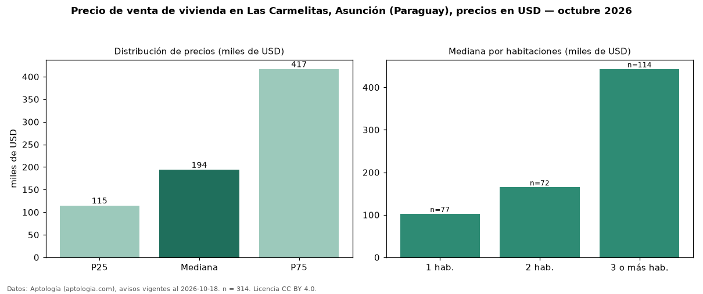

Precio de venta de vivienda en Las Carmelitas, Asunción (Paraguay), precios en USD — octubre 2026
USD 194.000 es el precio mediano de vivienda en venta en Las Carmelitas, Asunción (Paraguay) (n = 314 avisos). Por metro cuadrado, la mediana es USD 1.933/m² (n = 242 avisos con área). Por tipo: 67 % departamentos, 28 % casas, 5 % monoambientes. La mitad central de los avisos va de USD 115.000 a USD 417.000 (razón 3,6), una dispersión alta. El área mediana anunciada es 115 m². El segmento con más oferta es el de 3 o más habitaciones (114 avisos, mediana USD 443.037); pasar de 1 habitación a 3 o más habitaciones cambia la mediana +333 %. Datos: Aptología (aptologia.com), CC BY 4.0 — https://www.aptologia.com/py/venta/asuncion/las-carmelitas. Archivos: PDF, CSV con las cifras y gráfica PNG.

| Avisos únicos | 314 |
|---|---|
| Percentil 25 | COP 115.000 |
| Mediana | COP 194.000 |
| Percentil 75 | COP 417.000 |
| Mediana por m² | COP 1.933 |
Fuente: avisos vigentes de portales inmobiliarios recopilados por Aptología, deduplicados (mínimo 30 avisos únicos por celda). Precios pedidos, no cerrados. Fecha: 2026-10-18.